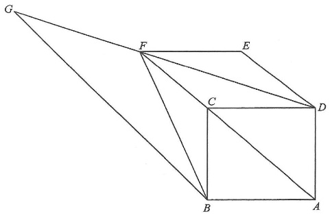

Topic 11 — Geometry · square, rhombus & angle chasing
In the figure, $ABCD$ is a square. Let $F$ be a point such that $CDEF$ is a rhombus, where $E$ is a point lying on $AD$ produced. $AF$ is produced to the point $G$ such that $AF // BG$. Which of the following are true?
I. $DF = FG$
II. $\triangle BFG \sim \triangle DEF$
III. $\angle ABG + \angle BFD = 180^\circ$

$AB = BC = CD = DA$ (property of square)
$CD = DE = EF = FC$ (property of rhombus)
Hence all seven segments are equal:
$$AB = BC = CD = DA = DE = EF = FC$$
→ The red tick marks on the canvas all carry the same length.
$\angle ACB = \angle ACD = 45^\circ$ (property of square, $AC$ bisects $\angle BCD$)
Since $E$ lies on $AD$ produced, $B\!-\!C\!-\!E$ is a straight line, so
$$\angle FCB = \angle FCD = 135^\circ \quad \text{(adj. } \angle s \text{ on st. line)}$$
Note that $\triangle DEF \cong \triangle DCF \cong \triangle BCF$ (S.S.S.).
In particular $\triangle DCF \cong \triangle BCF$, so
$$\therefore \; DF = BF$$
In the isosceles $\triangle CFB$: $\angle CFB = \angle CBF$ (base $\angle$s, isos. $\triangle$)
$$\angle FCB + \angle CFB + \angle CBF = 180^\circ \quad (\angle \text{ sum of } \triangle)$$
$$135^\circ + 2\angle CFB = 180^\circ \;\Rightarrow\; \angle CFB = 22.5^\circ$$
$$\therefore \; \angle EFD = \angle EDF = \angle CFD = \angle CDF = \angle CBF = \angle CFB = 22.5^\circ$$
Since $AF // BG$ (with $FB$ and $FG$ as transversals):
$$\angle FBG = \angle CFB = 22.5^\circ \quad \text{(alt. } \angle s,\; AF // BG)$$
$$\angle FGB = \angle CFD = 22.5^\circ \quad \text{(corr. } \angle s,\; AF // BG)$$
So $\angle FBG = \angle FGB$, hence
$$BF = GF \quad \text{(sides opp. equal } \angle s)$$
Together with $DF = BF$ from Step 3, we get $DF = FG$.
$\therefore$ I is true. TRUE
From Step 4, $\angle FBG = \angle FGB = 22.5^\circ$, and from Step 3, $\angle EFD = \angle EDF = 22.5^\circ$.
$$\therefore \; \angle FBG = \angle FGB = \angle EFD = \angle EDF = 22.5^\circ$$
$$\therefore \; \triangle BFG \sim \triangle DEF \quad \text{(A.A.A.)}$$
$\therefore$ II is true. TRUE
$$\angle ABG = \angle ABC + \angle CBF + \angle FBG = 90^\circ + 22.5^\circ + 22.5^\circ = 135^\circ$$
$$\angle BFD = \angle CFB + \angle CFD = 22.5^\circ + 22.5^\circ = 45^\circ$$
$$\therefore \; \angle ABG + \angle BFD = 135^\circ + 45^\circ = 180^\circ$$
$\therefore$ III is true. TRUE
All three statements I, II and III are true.
Question. In the figure, \(PQRS\) is a rhombus with \(\angle PQR=100^{\circ}\). Find \(\angle QSR\).